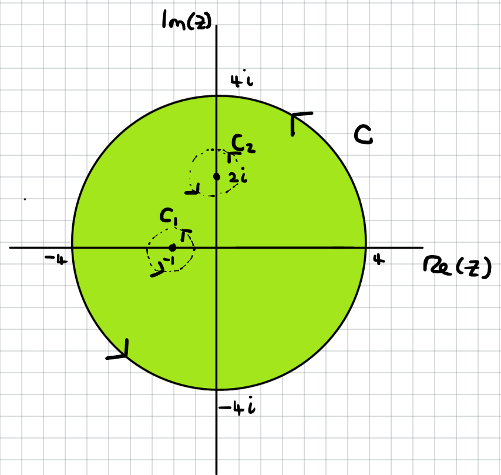

Jonathan Crofts
Nottingham Trent University
Evaluate the intergal $\oint_\mathcal{C} f(z)\mathrm{d}z$ on the unit circle when $f(z)$ is defined as
1. Since the function $f(z)=z$ is analytic on and within the unit circle we have by Cauchy's theorem that \[ \oint_\mathcal{C} z\,\mathrm{d}z = 0 \]
2. The function $f(z)=\bar{z}$ is nowehere analytic on the complex plane and so we must integrate it using contour integration.
The unit circle is parameterised as
\[ z(t) = e^{it}\quad t\in[0,2\pi) \]and so
\[ f(z(t)) = e^{-it}\quad \text{ and }\quad z'(t) = ie^{it} \]Thus
\[ \begin{align*} \oint_\mathcal{C} \bar{z}\,\mathrm{d}z = \int_a^b f(z(t)) z'(t)\,\mathrm{d}t &= \int_0^{2\pi} e^{-it}ie^{it}\mathrm{d}t\\ &= \int_0^{2\pi} i\mathrm{d}t = \Bigg[it\Bigg]_0^{2\pi} = \color{red}{\boxed{\color{white}{2\pi i}}} \end{align*} \]3. Firstly note that the function $f$ has an order $n$ pole at $z=0$
There are two cases to look at
$n=1$: in this case we have that
\[ \oint_\mathcal{C}\frac{1}{z}\mathrm{d}z = 2\pi i \]This follows since
\[ \frac{1}{z} = \frac{\bar{z}}{z\bar{z}} = \bar{z} \]Recall that $z\bar{z}=|z|^2=1$ for points on the unit circle
$n>1$: in this case we have that
\[ \begin{align*} \oint_\mathcal{C}z^{-n}\,\mathrm{d}z &= \int_0^{2\pi}e^{-int}ie^{it}\mathrm{d}t\\ &= i\int_0^{2\pi}e^{(1-n)it}\mathrm{d}t\\ &= i\left[\frac{1}{(1-n)i}e^{(1-n)it}\right]_0^{2\pi} = \frac{1}{1-n}\left(e^{(1-n)2\pi i}-1\right) = 0 \end{align*} \]The last step follows since
\[\displaystyle e^{2\pi mi}= \cos{2m\pi}+i\sin{2m\pi}=1\quad \forall m\in\mathbb{Z} \]Thus
\[ \color{red}{\boxed{\color{white}{ \oint_\mathcal{C} z^{-n}\mathrm{d}z= \begin{cases} 2\pi i & n=1\\ 0& n>1 \end{cases} }}} \]For $n<1$, $\oint_\mathcal{C}z^{-n}\mathrm{d}z=0$ by Cauchy's integral theorem since $f$ is analytic
If $f(z)$ is analytic on the closed annulus determined by two simple closed paths $\mathcal{C_1}$ and $\mathcal{C}_2$ then
\[ \oint_{\mathcal{C}_1} f(z)\,\mathrm{d}z = \oint_{\mathcal{C}_2} f(z)\,\mathrm{d}z \]$\bullet$ Examples of closed annuli are given in the figure
$\bullet$ This result will enable us to compute integrals around complicated paths
Start by splitting the annulus into two parts by adding two additional paths $\gamma_1, \gamma_2$ (see figure)
This cutting results in two new paths $C^*_1, C^*_2$
Now consider the integral around this shape as indicated by the arrows
\[ \color{#00FF00}{\boxed{\color{white}{ \begin{align*} I &= \int_{\mathcal{C}^*_1} f(z)\,\mathrm{d}z+\int_{\gamma_1} f(z)\,\mathrm{d}z-\int_{\mathcal{C}^*_2} f(z)\,\mathrm{d}z+\int_{\gamma_1} f(z)\,\mathrm{d}z\\ &=0 \quad \text{due to Cauchy's theorem} \end{align*} }}} \]In the limit $\epsilon\to 0$, $\gamma_1\to-\gamma_2$ and
\[ \int_{\gamma_1} f(z)\,\mathrm{d}z = -\int_{\gamma_2} f(z)\,\mathrm{d}z \]thus these two integrals cancel in $I$
In other words $\gamma_2$ is the opposite path of $\gamma_1$
Also, since in this limit $\mathcal{C}^*_1\to\mathcal{C}_1$ and $\mathcal{C}^*_2\to\mathcal{C}_2$ we have
\[ \int_\mathcal{C^*_1} f(z)\,\mathrm{d}z\to \oint_\mathcal{C_1} f(z)\,\mathrm{d}z \quad\text{ and }\quad \int_\mathcal{C^*_2} f(z)\,\mathrm{d}z\to \oint_\mathcal{C_2} f(z)\,\mathrm{d}z \]so that
\[ I = \oint_\mathcal{C_1} f(z)\,\mathrm{d}z -\oint_\mathcal{C_2} f(z)\,\mathrm{d}z = 0 \]as required
$\bullet$ The annuli in the figure are examples of doubly connected domains
$\bullet$ We can also consider domains with higher connectivity
$\bullet$ For example the figure to the left shows a triply connected domain
$\bullet$ For a triply connected domain
\[ \color{#00FF00}{\boxed{\color{white}{ \oint_\mathcal{C} f(z)\,\mathrm{d}z = \oint_{\mathcal{C}_1} f(z)\,\mathrm{d}z +\oint_{\mathcal{C}_2} f(z)\,\mathrm{d}z}}} \]If $f(z)$ is analytic on the closed domain $\mathcal{D}$ which is bounded by the curve $\mathcal{C}$ and contains $n$ holes, each bounded by the curves $\mathcal{C}_1, \mathcal{C}_2,\ldots, \mathcal{C}_n$, then the integral over $\mathcal{C}$ is given by
\[ \oint_{\mathcal{C}} f(z)\,\mathrm{d}z = \oint_{\mathcal{C}_1} f(z)\,\mathrm{d}z +\oint_{\mathcal{C}_2} f(z)\,\mathrm{d}z+\cdots +\oint_{\mathcal{C_n}} f(z)\,\mathrm{d}z \]provided the paths are traversed in the same direction
The proof of this result is like that for the Annulus Theorem - i.e. introduce cuts and use Cauchy's Theorem
Compute the integral
\[ \oint_\mathcal{C}\frac{3}{z+1}+\frac{4}{z-2i}\mathrm{d}z \]where the path $\mathcal{C}$ is the circle given by $|z|=4$ in the anticlockwise direction.
By the multiple annulus theorem we can perform the integral around $\mathcal{C}$ as follows
\[ \oint_\mathcal{C} f(z)\,\mathrm{d}z = \oint_\mathcal{C_1} f(z)\,\mathrm{d}z + \oint_\mathcal{C_2} f(z)\,\mathrm{d}z \]where $\mathcal{C}_1$ and $\mathcal{C}_2$ are unit cirlces enclosing the two singularities $z_1=-1$ and $z_2=2i$, respectively
Thus
\[ \begin{align*} \oint_\mathcal{C} f\,\mathrm{d}z &= \oint_\mathcal{C_1} \frac{3}{z+1}+\frac{4}{z-2i}\,\mathrm{d}z + \oint_\mathcal{C_2} \frac{3}{z+1}+\frac{4}{z-2i}\,\mathrm{d}z\\ &= \color{#00FF00}{\boxed{\color{white}{\oint_\mathcal{C_1} \frac{3}{z+1}\,\mathrm{d}z + \oint_\mathcal{C_2}\frac{4}{z-2i}\,\mathrm{d}z}}} \end{align*} \]This last line follows since the functions
\[ g = \frac{4}{z-2i}\quad \text{and} \quad h = \frac{3}{z+1} \]are analytic on and within the curves $\mathcal{C}_1$ and $\mathcal{C}_2$, respectively, and so Cauchy's theorem applies, i.e.
\[ \oint_\mathcal{C_1} g\,\mathrm{d}z = \oint_\mathcal{C_2} h\,\mathrm{d}z = 0 \]We have seen these type of integrals before
\[ \color{#00FF00}{\boxed{\color{white}{ \oint_\mathcal{C} f\,\mathrm{d}z = \oint_\mathcal{C_1} \frac{3}{z+1}\,\mathrm{d}z + \oint_\mathcal{C_2}\frac{4}{z-2i}\,\mathrm{d}z}}} \]Recall that
\[ \oint_\mathcal{C} \frac{1}{z-z_0}\,\mathrm{d}z = 2\pi i \]independent of $z_0$
See Example 15.2
Thus
\[ \begin{align*} \oint_\mathcal{C} f\,\mathrm{d}z &= \oint_\mathcal{C_1} \frac{3}{z+1}\,\mathrm{d}z + \oint_\mathcal{C_2}\frac{4}{z-2i}\,\mathrm{d}z\\ &= 3\cdot 2\pi i+ 4\cdot 2\pi i = \color{red}{\boxed{\color{white}{14\pi i}}} \end{align*} \]